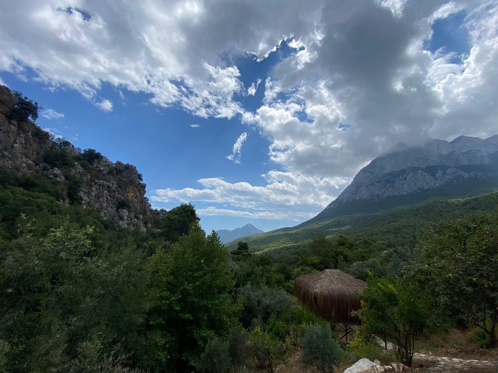

We are thrilled to invite you to our second dance festival in Turkey. This time we are going to make it close to Antalya in the mountains region - Geyikbayırı. It's a fascinating location with ancient spots around, mountains and sea - 25 min by car.
Place
Few words about the place. We have found an amazing campsite in the mountains in one of the most popular climbing areas in the World - Geyikbayiri. There is cosy accommodation, as well as a 102 m2 dance room with a view of 360 degrees, and meals 2 times per day (Breakfast and Dinner).
Antalya airport is the closest; which makes your travel to the campsite easy and enjoyable. From Antalya airport - you can take a taxi which will cost approximately 20 euros to the spot, or public transport which is approximately about 3 euros.
*The festival can help participants to organize transport from Airport to Geyikbayiri.
- 


The festival team is concerned about the Worldwide situation. We know how important to have time for self-development and self-retreat. We offer high-quality content with very available prices.
This year we would have two main teachers and two different and helpful disciplines: solo improvisation and Contact Improvisation.
The team of the festival is highly concerned about the safety of participants (physical and mental), and we believe that the knowledge of solo dance is a foundation for confident contact improvisation dance. That's why we have combined solo dance morning sessions with the Contact Improvisation session in the afternoon.
Teachers
Dilek Üstünalan

Class descriptions
Contact Improvisation Workshop: Precarious Balances
In this workshop, we will explore the fluid and temporary equilibrium states that we move through in our dances. We will practice falling into different directions, rising up with the support of the ground, feeling both our own and our partners’ connection to the earth while we are off-balance.
Solo Improvisation Workshop: Senses, Movement, Space
This workshop is about tuning into our senses and recognizing how our sensations effect our movement and our connection with the space. We will specificly work with three of our senses: sight, touch and sound. We will practice tracing the sensations individually and in combinations as well as tuning out our senses. This practice will help us with transitioning between different ways of attending to our senses while moving.

Bio
Dilek Üstünalan is a dancer, researcher, sociologist, non-formal education facilitator, thai massage therapist and organizer based in İstanbul. She has been teaching contact improvisation in different cities of Turkey (İstanbul, İzmir, Ankara, Eskişehir, Hatay…) for about six years.
As a member of CI-Turkey core group and ÇATI Contemporary Dance Artists Association, she takes part in the organization and facilitation of CI workshops, jams and labs; and also documentation of workshops and research. She is part of the organizing team of the annual Fall in CI - International Contact Improvisation Gathering. She is also a member of IDOCDE team, organizing annual symposiums and residencies for dance practicioners and dance teachers, within ImPulsTanz – Vienna International Dance Festival.
She had the chance to study with many precious instructors and share the dance with many dancers from different parts of the world by participating in international dance festivals such as ImPulsTanz, Contact Festival Freiburg and Sensing In. Some of the instructors who have significant influence on
her are Defne Erdur, Nita Little, Ray Chung, Andrew Harwood, Keith Hennessy, Benoit Lachambre, Kira Kirsch, Frey Faust, Barış Mıhçı, Francesca Pedulla, Antoine Ragot, Bruno Caverna, Matthieu Gaudeau and Anya Cloud.
She has been working in BoMoVu Association for the last 4 years and coordinating social projects based on the right to bodily autonomy, bodily integrity, physical activity and sports for all. She has given body awareness / sensory awareness, movement improvisation and contact improvisation workshops for kids, teachers and Syrian refugees; developed resources of games based on movement improvisation practices for children, within the programs of BoMoVu. She is interested in the potential of arts and movement for creating ways of living together and embracing differences.
Felix Arjona

Dancer and choreographer. Contemporary and contact improvisation dance teacher (CI). Yoga instructor. Gestalt and movement therapist.
In 2004 he began his 3-year training at the Andalusian Dance Center. In 2006 he obtained a scholarship at Endanza, Seville, and in 2007, he moved to Berlin to continue his training at TanzAkadamie Balance 1.
Since 2011, he has activated Contact Improvisation in Seville and participates as a teacher in festivals, meetings, educational centers in Europe and Latin America, such as the Pablo Olavide University (MAES and Master of Art Therapy), the Cías. DanzaUna and Danza Abierta at the University of Costa Rica, Desert Contact Almería, Asturias Contact Festival, Contact & Flow Andalucía, Cardedeu Contact Festival, SOMA & Play 2019/20/21/22, and has taught the training course 'Contact Improvisation Methodology' for students and teachers (CEP), of the Professional Conservatory of Seville 'Antonio Ruiz Soler' (2019). Félix is currently working on the Solo ‘LENTO’, which has been shown at the ‘Me, Myself & I’ Contest organized by the ‘Paso a 2’ Association, Teatro Pradillo, Madrid.

Félix is the founder, organizer and teacher together with the dancer and choreographer Dasha Lavrennikov of ‘SOMA&Play. Research and creation through movement, contact, and improvisation’ 2019/20/21/22.
He is also the founder of ‘CI Formación Andaluza’, the first CI education in Andalucía since 2020.
Website SOMA&Play somaandplay.weebly.com/ Website Felix Arjona: felixarjona.com/
Tamara Maksymenko

Tamara Maksymenko is a professional dancer, choreographer, and teacher of contact improvisation and contemporary dance for 17 years already. She has been teaching many workshops all over the world (Poland, Spain, Israel, Austria, Italy, Greece, Finland, Egypt, Germany, Russia, Ukraine, Morocco, Bulgary, Sweden, Portugal, France, Turkey). She is the founder of Motion Mode Dance Theatre (MMDT) and the creator of many dance projects.
28 years of dance experience (since the early age of 4). She got medical education in body therapy and sociology at Dnipropetrovsk National University and trained at the Physical Theatre in Intragna (Switzerland) with Thomas Mattler.

Now Tamara is a member of Ukrainian Contemporary Dance Platform Association and she is a member of OFFTANZ Tirol Association (Austria). The founder of "Solo & CI Tirol Festival" and "West meets East".
Solo Improvisation Workshop
"Every Contact Dance starts from contact with yourself"
This time we will build a connection between movements of finger-tips and toes, combining with crown and coccyx isolated movements. A big part of the class will be based on solo improvisation founded on some particular patterns. The goal we chase during this workshop is to isolate several limbs at once.
Softness, fluidity, flexibility VS strength, fixations, muscle work.
Emin Durak

About Emin:
Having received five years of Capoeira training from Brazilian Mestre Kiura, Emin develops techniques for movement improvisations, synthesizing contemporary and “non-contemporary” dance performances, workshops, films, sound-based works, installations, situations and research projects. He shares and publishes his artistic works and research projects under the umbrella of his newly found company: Sphinx Dance.
Emin has collaborated with different contemporary dance artists such as Moa Westerlund, Sebastian Lingserius, Peter Mills and Cristina Caprioli. His works were shown in different venues such as Dansenshus, Moderna Dans Teatern, R1 Nuclear Reactor, Weld and CCAP in Stockholm, Skogen in Gothenburg, Borderland in Denmark, and Refugio in Berlin.

Classes:
Emin's somatic works range eclectically between different styles, mostly being based on different contemporary concepts he's intrigued about. Most recently he has developed an ongoing performance project called "Antibodies"; which relates to the impulsivity of body, norms of resistance, stimuli, trigger, immune, quarrel etc. Emin will share a workshop within this concept, as well as Spiral Sphinx; his most practiced movement framework that he developed and practiced throughout years inspired mainly from Capoeira and Butoh among other things...
Sveta Bird

Sveta Bird is a professional dancer, performer, choreographer, dance teacher, organizer of dance festivals and workshops of CI and everything around CI. She has been dancing since childhood and for the last 18 years she has been living in exploaring Contact Improvisation, sometimes looking into other body-oriented practices.
Our musician ❤️
Shakima Garunts


Artist performer musician.
From an early age she studied classical music.
She studied violin and piano.
I was never satisfied with the work associated only with musical instruments, I became interested in exploring the instruments that a person is gifted with. That is, I began to explore such an important tool as our voice, attention, hearing, and every time I discover more and more new possibilities and facets of the wonderful magical human ability to sound. How our sound is related to physicality, how important hearing is.
I explore improvisational singing, free sounding, spiritual chants, traditional folk
song. I am interested in the statement in the theatrical space where the boundary between the artist and the audience disappears. Where the speaker and the present become one.
All life is an unimaginably huge university where I study. With gratitude to my great teachers who meet on the way, I continue to go towards life ...
From 1993 to 2000 studied at the Lviv State School of Music in the violin class, Lviv Academy of Music, Lviv State University, Faculty of Journalism
2000 - 2005 artist in the youth theater Myst, Kyiv
2004-2016 workshop of free creativity, Kyiv
Since 2013, studying at the Theater Center "Word and Voice" with
2014 artist instrumentalist Theater Center "Word and Voice" Ukraine,Lviv
Since 2016, he has been a performer in the international art laboratory "art continuum nomadic residency” director Sasha Dodo Thailand
for many years I have been collaborating with the duet "Metamotion" Sveta Bird and Daniel Draguescu
❤️currently solo instrumentalist in collaboration with Latvian musicians “Shakima Trio”
Agenda
Arrival day - Sunday, February 19

Food:

Turkey is famous for its cuisine and food culture. The Land camp prepares delicious vegetarian Turkish food (breakfast and dinner). If you are a carnivore - you are welcome to order a meat dish for an extra 5 euros per meal.
*You can do on the spot.
The Conditions of the Refunding
If you’re unable to join us because of illness or another PERSONAL issue, your prepayment won't be returned.
Prepayment returns in case of Force Majeure situations like extra covid restrictions or closed borders between countries.
We thank you for your understanding and respect for this festival policy.
The amount of participants is limited to 30 persons.
Early bird price before December 1st, — after the price goes up.
In case you would like to have more privacy and book entire room, please contact organisers via email: west.meets.east.turkey@gmail.com